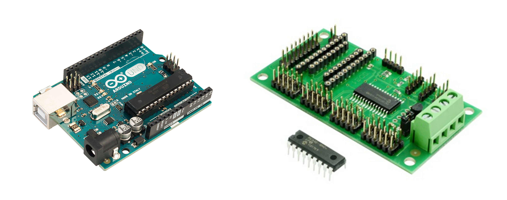

Section 1: Electronic Control Systems
Almost every modern device — from a microwave oven to a car engine — uses an electronic control system. These systems allow devices to respond to the world around them, make decisions, and control outputs automatically.
Any electronic control system can be broken down into three parts:
Devices that combine electronic control with moving mechanisms are called mechatronic systems. A washing machine, robot arm or delivery drone are all mechatronic — electronics tells the mechanisms what to do.
Inputs and outputs
In general, all systems need inputs from the outside world to sense what is happening and need outputs to influence it.
- Push switch / toggle switch — detects a press or on/off
- Light-dependent resistor (LDR) — detects light level
- Thermistor — detects temperature
- Microphone — detects sound
- Pressure pad — detects weight or pressure
- Tilt switch — detects orientation
- Infrared sensor — detects IR signals or motion
- LED / lamp — produces light
- Buzzer / speaker — produces sound
- DC motor — produces rotary motion
- Solenoid — produces linear motion
- Relay — switches higher-power circuits
- 7-segment display — displays numbers
- Servo motor — produces controlled angular movement
Section 2: What is a Microcontroller?
A microcontroller is often described as a computer-on-a-chip. It contains a processor, memory and input/output connections all in a single small, inexpensive package. Because of this, microcontrollers can easily be built into everyday products to make them more intelligent.
It is easy to think of a microcontroller only as a diagram or a symbol, but it is a real physical device — and different manufacturers package one very differently. The photograph below shows two boards commonly used in schools. On the left is an Arduino Uno: the main chip sits at the centre of the board, surrounded by the digital and analogue input/output pins along the edges, with a USB connector for programming and a power socket. On the right is a PICAXE project board, along with a bare PICAXE chip of the kind you'll find plugged into it — PICAXE chips are programmed in a similar way to an Arduino, but are typically mounted onto a simpler board that adds just the input/output connections and a power supply needed for a specific project.

Unlike a general-purpose computer, a microcontroller is typically programmed to do one specific job. The key advantage is flexibility — the same hardware can be reprogrammed to do something completely different simply by changing the software.
Away from the physical hardware, a microcontroller is drawn differently again depending on which software or exam paper you are looking at. The image below shows three examples: in Yenka, it appears as a simple green block with numbered inputs and outputs; in NoSyntaxSim, it appears as an on-screen component with input and output devices connected directly to it; and in a QS examination or assignment, it is drawn even more simply, as a plain rectangle with numbered pins down each side. All three are showing the same idea — inputs on one side, outputs on the other — just presented in the style of whichever tool you're using.

Hard-wired circuits
It is possible to produce electronic control circuits without microcontrollers, but they usually need a lot more parts and are significantly more complex. A control circuit without a programmable element is called a hard-wired circuit.
Advantages of microcontrollers
- Reliability — fewer separate components means fewer things to go wrong
- Compact — one chip replaces many separate components, saving space
- Flexible — reprogramming changes what the product does without changing hardware
- Rapid development — changes to the product are made in software, not by redesigning the circuit
- Low cost — mass production makes microcontrollers very inexpensive
Section 3: Flowcharts
A flowchart is a graphical way of planning and communicating a control sequence. It shows exactly what the microcontroller should do, in what order, and under what conditions. Flowcharts are used in the QS assignment and exam — you must be able to read, draw, correct and simulate them.
Standard QS flowchart symbols
A flowchart determines the order in which instructions are followed by the microcontroller — it is the plan the program must execute, step by step. Each type of instruction (starting/stopping, inputting/outputting, processing, or deciding) has its own standard box shape, so that anyone reading the flowchart can immediately recognise what kind of instruction each box represents, without needing to read every word.

These symbols are taken from the QS data booklet.
(although the sub procedure symbol is not assessed at National 5 level)
A flowchart could simply be a single run of commands from start to finish, ending once the last instruction has been carried out. The example below starts the program, turns an output ON, waits for a set time, then turns the output OFF before stopping.
However, a flowchart like this would only run through once before stopping. In practice, it is far more common for microcontroller programs to run continuously — repeating the same sequence over and over. This is called a continuous loop. The example below shows this using the flow line symbol, which loops back to an earlier point in the sequence instead of reaching STOP, so the sequence repeats indefinitely.
Section 4: Drawing Flowcharts from a Specification
In the QS exam and assignment you will be given a written specification and asked to draw a flowchart. Read the specification carefully — each step becomes one or more boxes in the flowchart.
What is a pin?
A microcontroller connects to the outside world through a number of pins along its edges — each one is a physical connection point that can be wired to an input device (like a switch) or an output device (like an LED). Every pin has its own number, such as D8 or D2, so that a flowchart or program can refer to exactly the right connection. From here on, worked examples and questions will refer to specific pin numbers — always check the pin table given with a task to see which device is connected to which pin.
Method
- Read the full specification first
- Identify all inputs and outputs from the pin table
- Draw a START terminal
- Work through the specification step by step — one action per box
- Use Decision boxes for any "wait until…" or "if… then…" conditions
- Use Process boxes for all delays (with units)
- Use In/Out parallelograms to turn outputs ON or OFF
- Add a continuous loop arrow back to the start if the sequence repeats
- Turn LED (D8) ON
- Wait 500 ms
- Turn LED (D8) OFF
- Wait 500 ms
- Repeat continuously
Note the continuous loop arrow returning from the last box to the "Turn D8 ON" step.
| Pin | Direction | Device |
|---|---|---|
| D8 | OUTPUT | Red LED |
| D9 | OUTPUT | Amber LED |
| D10 | OUTPUT | Green LED |
- Red ON — Wait 10 s
- Red ON, Amber ON — Wait 2 s
- Red OFF, Amber OFF, Green ON — Wait 10 s
- Green OFF, Amber ON — Wait 2 s
- Amber OFF — repeat from step 1
For each task: sketch your flowchart, then build and simulate it in NoSyntaxSim.
- Wait until start button (D2) AND door sensor (D3) are both ON
- Turn light (D8) ON, turntable motor (D9) ON, magnetron (D10) ON
- Wait 10 s
- Turn magnetron (D10) OFF
- Wait 1 s — Turn turntable (D9) OFF
- Turn buzzer (D11) ON — Wait 0.5 s — Turn buzzer (D11) OFF
- Turn light (D8) OFF — STOP
Section 5: Using Inputs — Decision Boxes
Most real control systems respond to sensor inputs. A decision box (diamond) checks whether an input is ON or OFF and branches the flowchart accordingly.
Waiting for an input
To make the program wait until a button is pressed, use a decision box that loops back to itself on the NO branch:
This is called a polling loop — the microcontroller keeps checking the input until it becomes active.
AND control — both inputs must be active
When two conditions must both be true before continuing, two decision boxes are placed in series. The YES output of the first leads into the second decision. Only when both return YES does the program continue — and if the second condition is not met, the flowchart loops all the way back to the first decision, not just the second. This matters: without looping back to the top, the two inputs could be triggered one after another (rather than together) and the program would still be allowed through.
OR control — either input can be active
When either of two conditions being true is enough to continue, two decision boxes are placed in parallel. The YES output of either one leads to the same next step.
- Wait until open button (D2) is pressed
- Turn motor (D8) ON — door opens
- Wait until door-open button (D3) is pressed — door fully open
- Turn motor (D8) OFF
- Wait 3 s
- Close door — turn motor (D9) ON (reverse direction)
- Wait until door-closed button (D4) is pressed
- Turn motor (D9) OFF — STOP (or loop)
Many control systems need to drive a motor in two directions — for example a buggy that drives forwards then reverses. In NoSyntaxSim, two separate output pins control direction: one pin drives the motor forwards, the other drives it backwards. Only one should ever be ON at the same time.
| Pin | Direction | Device |
|---|---|---|
| D2 | INPUT | Forward button |
| D3 | INPUT | Reverse button |
| D8 | OUTPUT | Motor forwards |
| D9 | OUTPUT | Motor backwards |
- Wait until forward button (D2) OR reverse button (D3) is pressed
- If D2 is pressed → turn D8 ON (motor forwards) — Wait 2 s — turn D8 OFF
- If D3 is pressed → turn D9 ON (motor backwards) — Wait 2 s — turn D9 OFF
- Repeat (continuous loop)
Section 6: Finite (Counted) Loops
A finite loop — also called a fixed loop, a counted loop, or a for loop — repeats a sequence a set, predetermined number of times decided in advance, then stops and moves on. This is different from a continuous loop, which has no predetermined end and repeats indefinitely.
To create a for…next loop in a flowchart, a variable (e.g. count) is used to keep track of how many times the loop has run:
- Initialise the variable: count = 0
- Perform the repeated action (e.g. flash an LED)
- Increment the variable: count = count + 1
- Decide: is count < target number? YES → repeat. NO → exit loop.
- Wait until button (D2) is pressed
- Sound buzzer (D8) 5 times — each buzz lasts 0.5 s with 0.5 s gap
- Reset and wait for the button again
Section 7: Reading and Correcting Flowcharts
In the QS exam you will often be given a flowchart that contains errors and asked to identify and correct them. Common errors include:
- Missing delay units (writing "500" instead of "500 ms")
- Wrong pin number used in an input or output box
- Decision box branching the wrong way (YES and NO swapped)
- Missing connection — the loop does not return to the correct point
- Wrong order of steps (e.g. turning a device ON after the delay instead of before)
- No START or STOP terminal
- Wrong flowchart symbol used (e.g. a rectangle instead of a diamond for a decision)
The flowchart below is supposed to flash a lamp (D8) when a moisture sensor (D2) is detected. Find two errors.
Section 8: Inputs, Outputs and Pin Numbers
The microcontroller used in NoSyntaxSim is based on the Arduino platform. Inputs and outputs connect to numbered digital pins (D2–D13). In the QS exam, you will always be given a pin table telling you which pin connects to which input or output device.
If you are using a PICAXE chip instead, pins are numbered slightly differently — as b.0 to b.7 rather than D2–D13. QS flowchart questions and answers only ever use plain pin numbers (like D8), regardless of which hardware a class happens to be using, so that's the numbering to use when answering questions.
Example pin table
| Pin | Direction | Device |
|---|---|---|
| D2 | INPUT | Push button (start switch) |
| D3 | INPUT | Temperature sensor |
| D4 | INPUT | Pressure pad |
| D5 | INPUT | Reset button |
| D8 | OUTPUT | Red LED |
| D9 | OUTPUT | Green LED |
| D10 | OUTPUT | Motor |
| D11 | OUTPUT | Buzzer |
Digital inputs
A digital input can only be logic 1 (ON) or logic 0 (OFF). A push button is digital — it is either pressed or not. In a decision box in a flowchart, a digital input is checked as: "Is D2 ON?"
Some inputs — like a thermistor or an LDR — can physically vary smoothly rather than switching cleanly between two states. At this level, you can still treat them as behaving digitally: they are simply LOW until a particular point is reached (e.g. a temperature or light level), then they become HIGH. In Yenka and in some tasks, this is exactly how these inputs are controlled and checked in a flowchart.
Section 9: Generating Code
One of the most powerful features of NoSyntaxSim is that it can automatically convert your flowchart into real code — either Arduino C++ or pBASIC (the language used by PICAXE chips), depending on which target you choose. This is the actual code that would run on a physical microcontroller.
While you do not need to write or memorise code for the N5 exam, you may be asked to read a short piece of code and correct an error in it, so understanding the connection between a flowchart and the code it produces is useful preparation.

void loop() {
digitalWrite(8, HIGH);
digitalWrite(8, LOW);
delay(500);
}Output Drivers
A microcontroller pin can only supply a small current — not enough to directly drive a motor or solenoid. An output driver (typically a transistor or relay) amplifies the signal to power the output device. In exam circuits, a transistor driver circuit is commonly shown between the microcontroller output pin and the output device.

This circuit uses three outputs. Output5 (LED) and Output6 (buzzer) both draw very little current, so they run directly from the microcontroller's own supply. Output7 drives a transistor, which switches a relay coil — the relay's separate contacts then control a motor circuit running from a much higher voltage (24 V), since that's more current and voltage than the microcontroller or transistor could handle directly. The diode across the coil protects the transistor from the voltage spike produced when the relay switches off.
Section 10: Design Challenges
For each challenge below, follow the full engineering process: read the specification carefully, draw a flowchart, then build and simulate it in NoSyntaxSim. Once it's working, export your solution and paste it into your notes as a record of your finished system.
- A master switch (D2) must be pressed to arm the system
- If a heat sensor (D3) is activated OR a manual alarm button (D4) is pressed, the alarm (D8) sounds
- The alarm continues to sound until a reset switch (D5) is pressed
- After reset, the system returns to waiting (armed state)
- D2 = Start button | D8 = Red LED | D9 = Amber LED | D10 = Green LED | D11 = Buzzer
- Wait until start button (D2) is pressed
- Red LED (D8) ON — Wait 3 s
- Red (D8) OFF, Amber (D9) ON — Wait 1 s
- Amber (D9) OFF, Green (D10) ON, Buzzer (D11) ON — Wait 0.5 s
- Buzzer (D11) OFF — Green LED stays ON
- System waits for the next race (continuous loop back to wait for button)
This challenge combines decision boxes, a counted variable and two inputs.
- D2 = Entry sensor (ON when person enters) | D3 = Exit sensor (ON when person leaves)
- D8 = Display / counter output | D9 = Alarm (sounds when museum is full)
- Set count = 0
- Check entry sensor (D2) — if ON, add 1 to count
- Check exit sensor (D3) — if ON, subtract 1 from count
- If count > 10 (museum full), turn alarm (D9) ON, otherwise turn alarm OFF
- Output count value to display (D8)
- Repeat continuously
This challenge combines a for…next counted loop with multiple inputs and a sequenced output.
- D2 = 10p coin sensor | D3 = 20p coin sensor | D4 = Dispense button
- D8 = Can dispenser motor | D9 = Change/reject indicator light
- Set total = 0
- Wait for a coin — if D2 pressed (10p) add 10 to total; if D3 pressed (20p) add 20 to total
- Repeat step 2 until dispense button (D4) is pressed
- If total ≥ 30p: turn D8 ON (dispense can) — Wait 1 s — turn D8 OFF
- If total ≠ 30p exactly: flash D9 (change light) 3 times — each flash 0.5 s ON, 0.5 s OFF
- Reset total to 0 and repeat